Coordinate Reference Systems Intro
Overview
In QGIS the default projection, or CRS, is WGS84 Geographic Coordinate System.
The WGS84 CRS has become a global standard for latitude and longitude positions, such as those captured with GPS devices. Note that "unprojected" data, or those with projections that cannot be interpreted will be projected by default in WGS-84 when using QGIS.
It is possible to load layers with different CRS into a QGIS project and view them seamlessly in the same coordinate space.
This exercise will introduce the basics of managing CRS in QGIS.
See also Peter H. Dana's Map Projection Overview.
1. From the top Menu go to PROJECT | PROJECT PROPERTIES
Then go the CRS tab
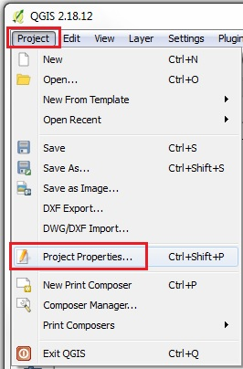
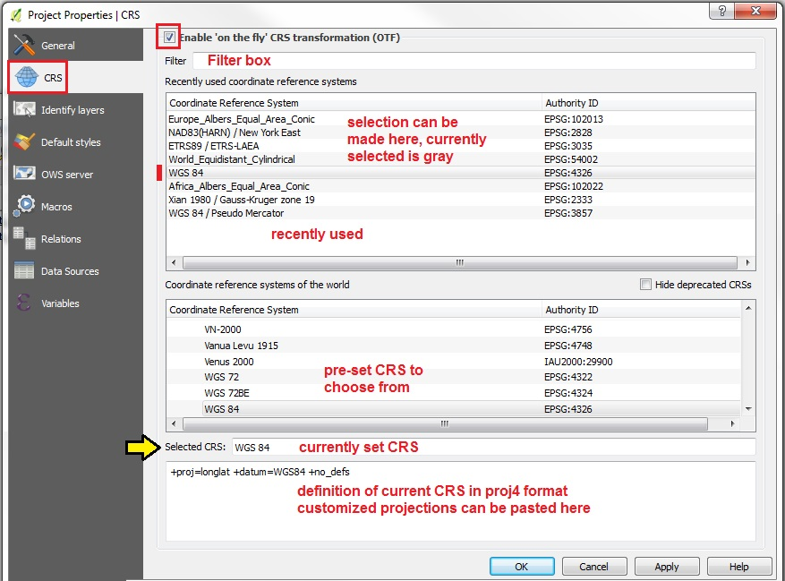
1. Start by ticking the checkbox to "Enable "on the fly" CRS transformations (OTF)"
2. The "Recently used" CRS Panel can be used to reset the Project CRS to any options listed
3. The "CRS of the World" panel lists all the pre-configured CRS that QGIS has to choose from
4. Below this is the SELECTED CRS which lists the Name of the currently set CRS
5. Next is a proj4 text panel, where CUSTOMIZED projections can be set by pasting in proj4 format CRS statements. You can look up proj4 statements by EPSG number at SpatialReference.org
6. At the top of the CRS tab is a FILTER box, where you can Search by CRS Name or by EPSG number
---
Note: in the main QGIS User Interface, the current PROJECT CRS is always indicated in the lower right corner of the STATUS BAR as EPSG #.
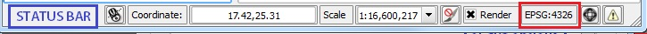
The following exercise uses data from:
- Workshop Data 2015-03 PART TWO Egypt
- Workshop Data 2014-11 PART TWO Spain
- Workshop Data 2014-11 PART TWO China
1. For this exercise go to PROJECT | PROPERTIES and UNCHECK the "on the fly" transformations setting and click APPLY then OK.
2. Now we will Add Vector Data
3. Set the Encoding to ISO-8859-1 [Latin alphabet with European standard diacritic marks]
4. Add the Egypt layer: egypt_admi1_iso-8850=9-1
5. Also using Encoding: ISO-8859-1, add the Spain layer: ESP_adm4
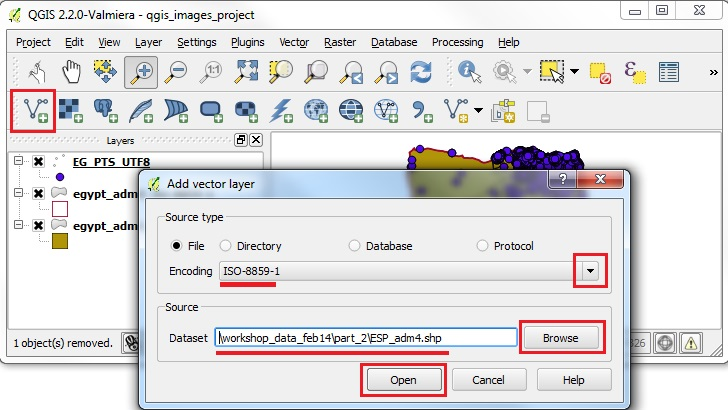
1. Add another layer, changing Encoding = UTF8, the egypt_gns_pts_utf-8
2. click on the ZOOM FULL button (Zoom to Full Extent of active layers)
3. Now you should see the Egypt and Spain data on the Map View.
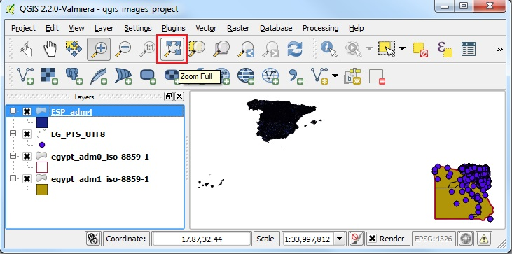
1. Right click on the ESP_adm4 layer, and then PROPERTIES | GENERAL
2. You should see that the CRS is set to EPSG:4326 - WGS 84
3. Close the Layer Properties window and note that the PROJECT CRS is also set to EPSG:4326 on the lower right of the status bar
4. Right click on one the Egypt layers and you will find that the same CRS settings are found, EPSG:4326
5. Because ALL layers in our project are in the same CRS and the Project itself is the same CRS, they are shown correctly, even though we have UNCHECKED the setting for ENABLE ON-THE-FLY CRS TRANSFORMATIONS !
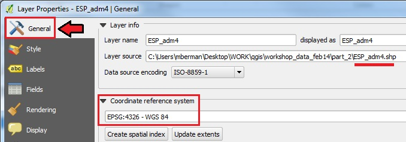
1. Now let us test this by adding a layer with a very different CRS definition
2. First make sure that in PROJECT | PROJECT PROPERTIES the ON-THE-FLY Transformation is still UNCHECKED (ie. disabled)
3. Now Add Vector Data in a DIFFERENT CRS
4. Set the Encoding to GBK
5. Browse to the China Provinces sample data in the workshop folder 6. workshop_data_2014-11/part_2/v4_1820_prov_pgn_gbk then OPEN.
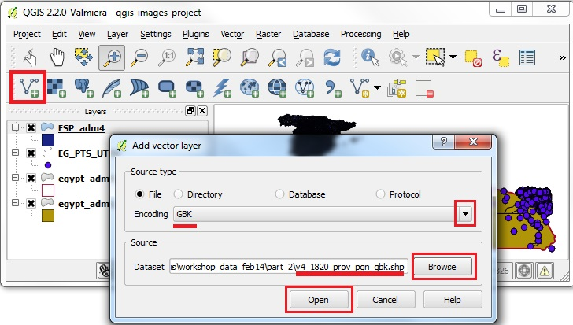
1. When adding incompatible CRS layers in the same map view, and with the ON-THE-FLY Transformation unchecked, the Map View will either remain unchanged, or may go blank
2. Now click on the ZOOM FULL button
3. QGIS 2.0 will automatically RESET the ON-THE-FLY Transform option, and your layers should now show up in correct relative positions
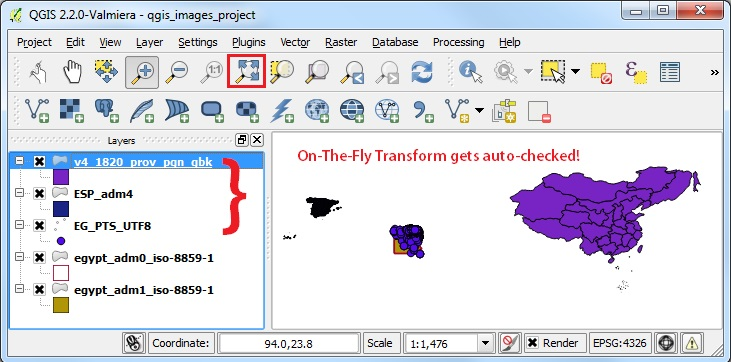
1. Now make sure the v4_1820_prov_pgn_gbk layer is the ACTIVE layer, by clicking on it in the Layers Panel
2. With the China Provinces layer ACTIVE, go to PROJECT | PROJECT PROPERTIES and UNCHECK the ON-THE-FLY Transform option
3. At this point the projection should transform to the CRS of the active layer
4. Click ZOOM FULL on the navigation toolbar
5. The Map View will attempt to view all the layers, but they will no longer be in compatible projection space!
6. The China data, being the only layer that matches the Project Layer (see the EPSG # 2333 for the Project in the STATUS BAR on the lower right), will be visible.
7. What this means is that the Project CRS has been set to the active layer, which will look proportionally correct, while the other data layers will be so tiny that they will be visible as a single dot, or not shown on the screen at all
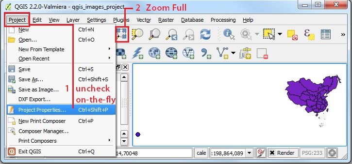
1. Now go to PROJECT | PROJECT PROPERTIES and CHECK the ON-THE-FLY Transform option again
2. The data layers will be transformed to the CRS of the active layer (EPSG 2333)
3. Click ZOOM FULL on the navigation toolbar
4. The Map View will attempt to view all the layers, but in this example, the Egypt & Spain layers will be very distorted, because the WGS-84 CRS is not appropriate to be transformed to the China CRS
5. As shown in the STATUS BAR, the Project is set to EPSG:2333 a specialized Gauss Kruger Xian 1980 projection for China. That is why the other layers get distorted.
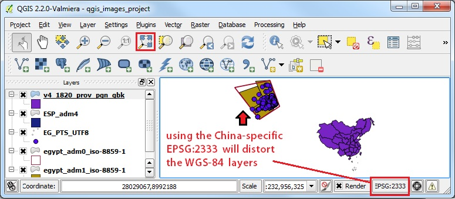
1. Finally, let us go to PROJECT | PROJECT PROPERTIES and reset the PROJECT PROJECTION to WGS-84
2. You should be able to see WGS-84 EPSG:4326 in the RECENTLY USED projections list
3. Click on the EPSG:4326 line and APPLY
4. The selected CRS should now read WGS 84
5. Click OK and then ZOOM FULL
6. The Map View should now seem more or less as we would expect it to, with the layers for Egypt, China, and Spain showing up in their relative positions.
7. That is one advantage of using the Global Geographic CRS, WGS-84, because it should work for a map containing elements from anywhere on the standard global grid, unlike a custom projection that will only work for a specific area of the world.
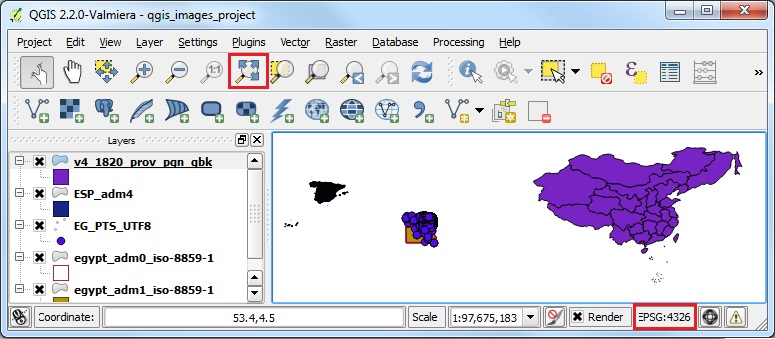
Proceed to Batch Reproject Instructions